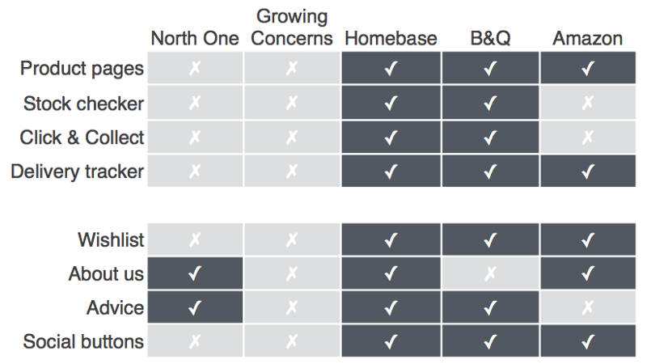

Eden Garden
Synopsis
Eden Garden is a garden supplies store located in East London. They want to have online presence without losing the ‘small shop’ appeal and the great customer service.
The company doesn’t offer online services at the moment, actually, this need is not covered in the area. This is causing the loss of some clients and reduces the probability of getting new ones, because those who need an online service buy from big companies even though they would rather buy local.
Skills
- User interview
- User flows
- User journeys
- Storyboarding
- Sketching and wireframing
- Information architecture
- Card sorting
Competitive analysis
Two local business in the area and three big companies were included in the competitive analysis. The first revelation was that none of the small companies offer an online service. This study also showed two fundamental qualities that the new Eden Garden website should include: the image and proximity of small companies and the reliability and good service of the big companies.

In order to build trust and confidence, the website would provide information about the shop and the professionals who work there, as well as the possibility of contact them for advice or help. It also needs an easy checkout process and options like ‘Click and collect’ to satisfy the demands of customers who like the contact with real people at the shop but want to have a control over time and resources.
User Research
The personas provided by the client were Yoshi, Max and Robert. All of them with different backgrounds but similar requirements. They don’t trust the customer service, they like to buy local and they are impatient and demanding.
One potential user with the same characteristics was interviewed. He stated he doesn’t buy local as much as he would like because he doesn’t have the opportunity of doing it online.
I prefer to buy online but I don’t have the option of doing it from small shops and I don’t trust the service of big companies.
Scenario
Robert loves plants and someone gave him one for his birthday. A few days later, Robert notices that the plant looks sick. Worried, he looks for help online and finds a product that will be delivered for him.
Wireframes
The first sketches were made to solve three main problems:
Navigation
The users think it’s difficult to find the products they are looking for without wasting time. A card sorting was conducted in order to determine the best structure and navigation system for the site.
Build trust
The users become loyal when they see the shop as a group of accessible professionals and not as a company that doesn’t care about their needs. Help and advice buttons and information will be available from every page.

Schedule and shipment
The users want to know when their orders are going to arrive, and they also would like to pick the order in store occasionally.

Next steps
The next steps would be the implementation of the payment methods, the development of new prototypes for more scenarios and tasks and new rounds of user testing.
Also the development of new pages, like ‘About’ and ‘Advice’, where tips and frequent questions would be available. In addition, the option of ordering products that are not on the website should be available.